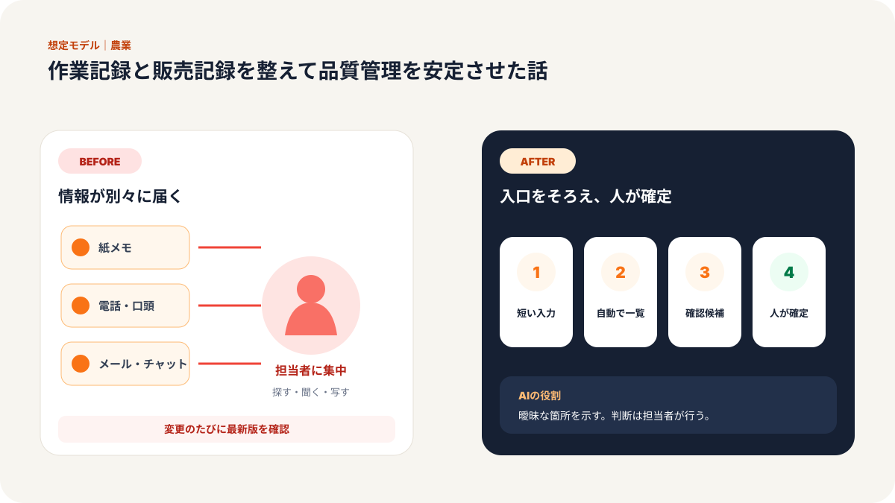
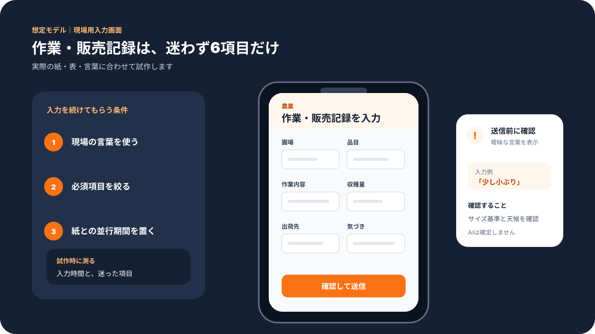
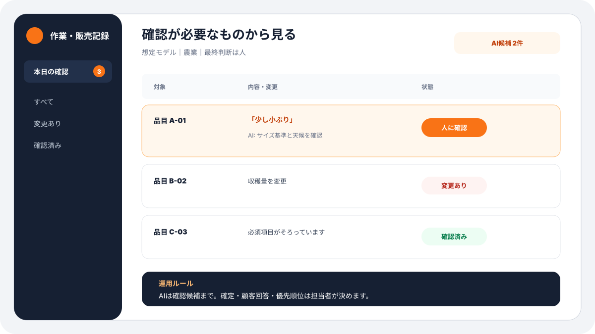
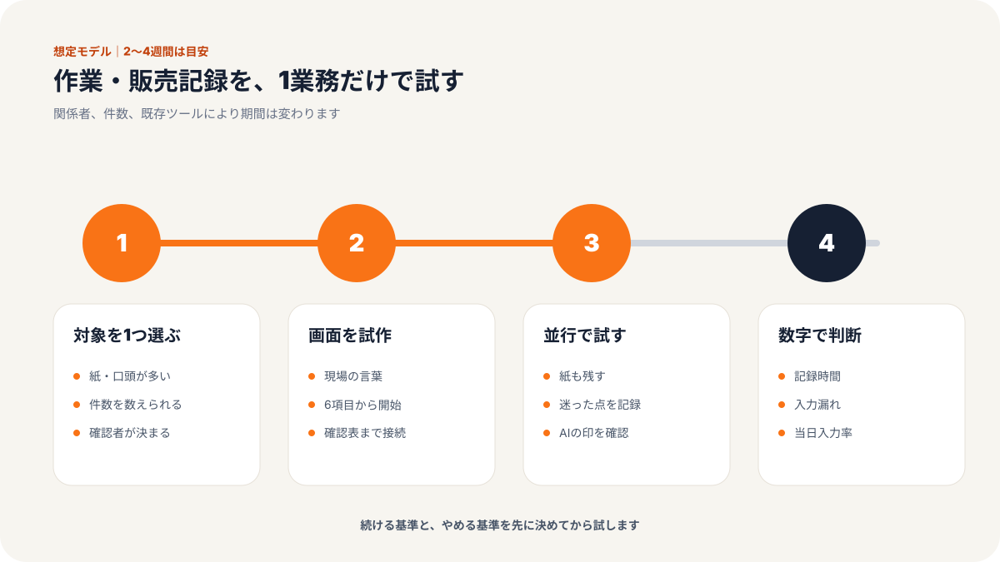
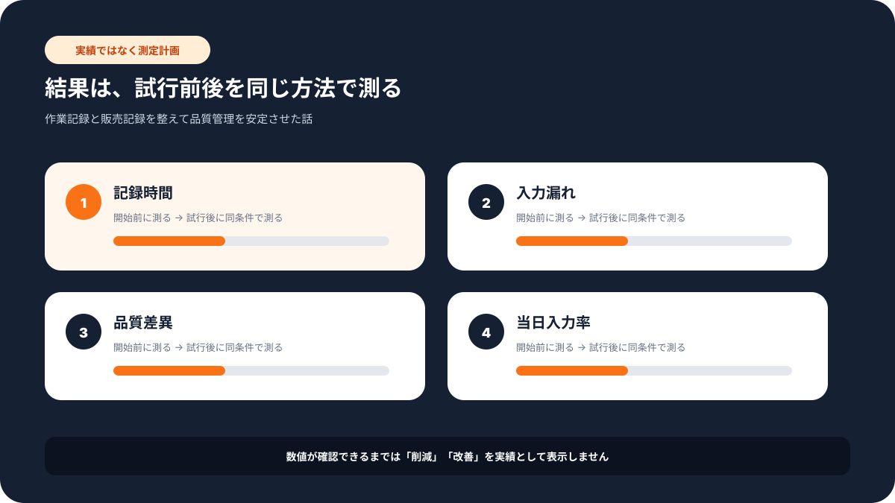

現場での使い方
この記事で変わる業務の流れ
「誰が入力し、誰が確認するか」までイメージできるよう、想定画面と導入手順をまとめています。





北海道の野菜農家・女将・従業員12名の事例
北海道で野菜を育て、直売や予約販売も行っている従業員12名の農家では、作業記録と販売記録の管理が長年の悩みでした。
畑の状況は毎日変わります。天候、気温、作業内容、出荷量、問い合わせ内容。どれも大事なのに、記録は手書きのノートや個人のメモに分かれていました。
女将さんは最初にこう話していました。
「今日の畑の状況は分かるんです。でも、先月と比べて何が良かったのか、来年どう活かすのかを聞かれると、すぐには出せないんです」
現場で困っていたのは、AIを使うかどうか以前の問題でした。情報が残っていないのではなく、あとから使える形で残っていなかったのです。
課題：紙の記録はあるのに、品質管理に使えなかった
導入前の作業は、決して雑ではありませんでした。
毎日の作業記録は付けていました。出荷時の数量も書いていました。お客様からの問い合わせも、電話を受けた人がメモしていました。
ただ、記録の場所が分かれていました。
畑の作業は紙のノート。販売数は別の台帳。予約は電話メモ。問い合わせは担当者の記憶。収益の確認は月末にまとめて集計。
そのため、次のようなことが起きていました。
- 作業記録に1日平均30分ほどかかる
- 出荷記録は1回15分ほどかかる
- 顧客問い合わせは1日8件前後あり、過去対応を探すのに時間がかかる
- 予約の重複や確認漏れが月3〜5件発生する
- 月末の収益把握に4時間ほどかかる
数字だけ見ると、1つひとつは小さく見えます。
しかし、農繁期は違います。朝から収穫、選別、出荷、接客、問い合わせ対応が続きます。作業後にまとめて記録しようとしても、細かい天候や作物の状態は思い出しにくくなります。
現場のスタッフからも、こんな声がありました。
「書くことは大事だと分かっています。でも忙しい日は、あとで書こうと思って抜けてしまいます」
「どのお客様に、どの品種を案内したかを探すのが大変でした」
「品質にばらつきが出た時、何が原因だったのか追いかけにくかったです」
問題は、記録を増やすことではありませんでした。記録を減らしながら、あとから見返せる形に変えることでした。
施策：入力する画面を作り、記録を1か所に集めた
弊社が行ったのは、大きなシステムを入れることではありません。
まず、スマートフォンで入力できる画面を作りました。作業後に事務所へ戻ってから書くのではなく、畑や出荷場で短く入力できる形です。
専門的には Googleフォームやスプレッドシートを使いましたが、現場には「入力する画面」と「自動でまとまる表」と説明しました。
ステップ1：記録する項目を減らす
最初に、今あるノートをすべて見せてもらいました。
天候、作業場所、品種、作業内容、気づき、出荷量、問い合わせ内容。項目は多くありましたが、毎日すべてを細かく書く必要はありませんでした。
そこで、毎日必ず入れる項目と、必要な時だけ入れる項目に分けました。
「これなら朝礼後に1分で入れられますね」
女将さんがそう言った時点で、現場に残る形が見えてきました。
ステップ2：販売記録と問い合わせをつなげる
次に、出荷・販売記録と問い合わせ内容を同じ表で見られるようにしました。
どの野菜がいつ多く売れたか。どんな問い合わせが多かったか。予約が重なりやすい曜日はいつか。
これまでは月末にしか見えなかった情報を、週ごとに見られるようにしました。
ステップ3：AIで振り返りのたたき台を作る
最後に、AIを使って週次の振り返り文を作る仕組みを入れました。
AIが勝手に判断するのではありません。作業記録と販売記録をもとに、「今週の傾向」「問い合わせの多かった内容」「来週確認したい点」を下書きする役割です。
女将さんは、AIが出した文章を見てこう言いました。
「これなら会議の前に、何を話せばいいか分かります」
AIは農業の答えを出す先生ではなく、記録を見返すための補助役として使いました。
成果：収益把握4時間が45分になり、品質も安定した
導入後、最も大きく変わったのは、月末の集計と品質確認です。
| 項目 | Before | After | 変化 |
|---|---|---|---|
| 作業記録時間 | 60分/日 | 20分/日 | 65%削減 |
| 出荷記録時間 | 15分/回 | 8分/回 | 60%短縮 |
| 収益把握時間 | 4時間/月 | 45分/月 | 80%削減 |
| 品質安定性 | 90% | 95% | 5ポイント向上 |
| 顧客満足度 | 75% | 88% | 13ポイント向上 |
作業・生産記録は週10時間から3時間へ。出荷・販売管理は週8時間から2時間へ。顧客対応も週6時間から2時間へ減りました。
副次的な変化もありました。
問い合わせ履歴が残るようになったため、担当者が変わっても対応が引き継げるようになりました。予約の確認漏れも減り、季節ごとの人気商品や問い合わせ内容も見えるようになりました。
スタッフからは、こんな声が出ました。
「前は記録が面倒でしたが、今はあとで役に立つのが分かるので続けやすいです」
「お客様に聞かれた時、前回の内容をすぐ確認できるのが助かります」
「数字で見えると、来週何を準備するか相談しやすくなりました」
なぜ効果が出たのか
この事例で大事だったのは、AIを前面に出しすぎなかったことです。
農業の現場では、天候や土の状態、作物の様子など、人の経験が大きな意味を持ちます。そこをAIに置き換えるのではなく、経験をあとから見返せる形にしました。
効果が出た理由は3つあります。
1つ目は、入力を短くしたことです。
項目が多すぎると続きません。毎日入れるものを絞ったことで、記録が習慣になりました。
2つ目は、販売と問い合わせを一緒に見たことです。
売れた数だけではなく、なぜ問い合わせが増えたのか、どの商品説明が必要だったのかが見えるようになりました。
3つ目は、AIを振り返りの下書きに使ったことです。
AIが結論を出すのではなく、話し合いの材料を整える。この使い方が現場に合っていました。
他の業種でも応用できること
同じ考え方は、農家だけでなく小さな店舗や地域事業にも使えます。
- 道の駅：販売数、問い合わせ、欠品理由をまとめる
- 飲食店：仕込み量、予約、廃棄量を記録する
- 小売店：売れ筋、客層、問い合わせを週次で見る
- 観光業：予約内容、キャンセル理由、顧客の声を残す
大事なのは、最初から大きなシステムを作らないことです。
まず、毎日残すべき情報を3〜5項目に絞る。次に、入力する画面を作る。最後に、AIで振り返りを助ける。
この順番なら、ITが得意でない現場でも始めやすくなります。
まとめ
今回の野菜農家では、作業記録や販売記録を増やしたのではありません。むしろ入力する内容を減らし、あとから使える形に整えました。
その結果、収益把握は4時間から45分へ。品質安定性や顧客満足度も改善しました。
「記録を取るための記録」ではなく、「次の作業を良くするための記録」に変えたことが、一番の成果です。
気になる業務があれば、お気軽にお声がけください。
弊社では中小企業のAI活用・システム開発の伴走支援を行っています。